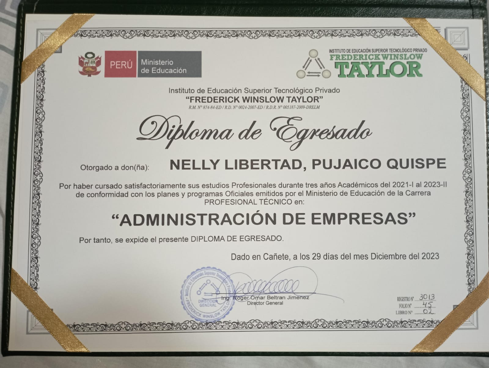

Mi Trayectoria en el Instituto de Educación Superior Tecnológico Privado Frederick Winslow
Actualmente soy egresda Técnica de la carrera de Administración de Empresas, en la cual recibí conocimientos durante tres años en los temas de etica empresarial, el proceso administrativo, estrategias gerenciales, etc

Mi Trayectoria y todo lo aprendido de I ciclo hasta IV ciclo en el Instituto de Educación Superior Tecnológico Público "Cañete":
Durante el primer año dentro del instituto obtuvimos conocimientos en base al proceso de mantenimiento a una PC y cada una de sus partes y funciones que tiene cada pieza del dispositivo. Dentro del segundo año obtuvimos todo el aprendizaje para crear páginas web mediante lenguajes de programación html, php, java, logrando asi desarrollarnos poco a poco como programadores.
Gracias a todo lo aprendido he obtenido una buena experiencia educativa, demostrando que puedo desenvolver mejor mis habilidades dentro de los centros laborales en los que podré estar a futuro. Gracias a los cursos de seguridad informática, base de datos, entre otros.